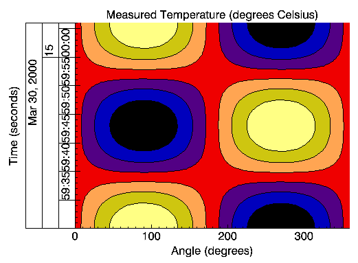

The IDLgrContour object draws a contour plot from data stored in a rectangular array or from a set of unstructured points. Both line contours and filled contour plots can be created.
An IDLgrContour object is an atomic graphic object ; it is one of the basic drawable elements of the IDL Object Graphics system, and it is not a container for other objects.
The object stores the following argument or property in double-precision if the DOUBLE_DATA property is specified, and in single-precision otherwise.
See IDLgrContour::Init .
Objects of this class have the following properties. See IDLgrContour Properties for details on individual properties.
|
|
|
|
|
In addition, objects of this class inherit the properties of all superclasses of this class.
This class has the following methods:
In addition, this class inherits the methods of its superclasses (if any).
The following code displays the contour object created above in the X - Y plane.
Note: In order to display the contour as on the plane (rather than as a three-dimensional image), you must set the PLANAR property of the contour object equal to one and explicitly set the GEOMZ property equal to zero.
mywindow = OBJ_NEW('IDLgrWindow')
myview = OBJ_NEW('IDLgrView', VIEWPLANE_RECT=[0,0,19,19])
mymodel = OBJ_NEW('IDLgrModel')
data = DIST(20)
mycontour = OBJ_NEW('IDLgrContour', data, COLOR=[100,150,200], $
C_LINESTYLE=[0,2,4], /PLANAR, GEOMZ=0, C_VALUE=INDGEN(20))
myview->Add, mymodel
mymodel->Add, mycontour
mywindow->Draw, myview
This results in the following figure.
|
|
Another possible example may be the surface temperature (in degrees Celsius) of each degree of a single circle on a sphere recorded at every second for 37 seconds after the initial recording of 59 minutes and 30 seconds after 2 o’clock pm (fourteen hundred hours) on the 30th day of March in the year 2000:
number_samples = 37
date_time = TIMEGEN(number_samples, UNITS = 'Seconds', $
START = JULDAY(3, 30, 2000, 14, 59, 30))
angle = 10.*FINDGEN(number_samples)
temperature = BYTSCL(SIN(10.*!DTOR* $
FINDGEN(number_samples)) # COS(!DTOR*angle))
As with the one-dimensional case, the format of the date/time values is specified through the LABEL_DATE routine as follows:
date_label = LABEL_DATE(DATE_FORMAT = $
['%I:%S', '%H', '%D %M, %Y'])
where %I represents minutes, %S represents seconds, %H represents hours, %D represents days, %M represents months, and %Y represents years.
The first level (closest to the axis) will contain minute and second values separated by a colon (%I:%S). The second level (just below the first level) will contain the hour values (%H). The third level (the final level farthest from the axis) will contain the day and month values separated by a space and year value separated from the day and month values by a comma (%D %M, %Y).
Since the final contour display will be filled, we should define a color palette:
oContourPalette = OBJ_NEW('IDLgrPalette')
oContourPalette->LoadCT, 5
As in the one-dimensional example, the display must be initialized:
oContourWindow = OBJ_NEW('IDLgrWindow', RETAIN = 2, $
DIMENSIONS = [800, 600])
oContourView = OBJ_NEW('IDLgrView', /DOUBLE)
oContourModel = OBJ_NEW('IDLgrModel')
oContour = OBJ_NEW('IDLgrContour', temperature, $
GEOMX = angle, GEOMY = date_time, GEOMZ = 0., $
/PLANAR, /FILL, PALETTE = oContourPalette, $
/DOUBLE_GEOM, C_VALUE = BYTSCL(INDGEN(8)), $
C_COLOR = BYTSCL(INDGEN(8)))
; Applying contour lines over the original contour display.
oContourLines = OBJ_NEW('IDLgrContour', temperature, $
GEOMX = angle, GEOMY = date_time, GEOMZ = 0.001, $
/PLANAR, /DOUBLE_GEOM, C_VALUE = BYTSCL(INDGEN(8)))
The oContourModel object will contain the IDLgrContour and IDLgrAxis objects. The oContourView object contains the oContourModel with the DOUBLE keyword. The DOUBLE and DOUBLE_GEOM keywords are set for the oContourView and oContour objects because date/time data is made up of double-precision floating-point values.
Although the date/time part of the data will actually be contained and displayed through the IDLgrAxis object, the oContour object is created first to provide a display region for the axes:
oContour->GetProperty, XRANGE = xr, YRANGE = yr, ZRange = zr
xs = NORM_COORD(xr)
xs[0] = xs[0] - 0.5
ys = NORM_COORD(yr)
ys[0] = ys[0] - 0.5
oContour->SetProperty, XCOORD_CONV = xs, YCOORD_CONV = ys
oContourLines->SetProperty, XCOORD_CONV = xs, YCOORD_CONV = ys
The oContourLines object is created to display contour lines over the filled contours. Note these lines have a GEOMZ difference of 0.001 from the filled contours. This difference is provided to display the lines over the filled contours and not in the same view plane. The NORM_COORD routine is used to create a normalized (0 to 1) display coordinate system. This coordinate system will also apply to the IDLgrAxis objects:
; X-axis title.
oTextXAxis = OBJ_NEW('IDLgrText', 'Angle (degrees)')
; X-axis.
oContourXAxis = OBJ_NEW('IDLgrAxis', 0, /EXACT, RANGE = xr, $
XCOORD_CONV = xs, YCOORD_CONV = ys, TITLE = oTextXAxis, $
LOCATION = [xr[0], yr[0], zr[0] + 0.001], TICKDIR = 0, $
TICKLEN = (0.02*(yr[1] - yr[0])))
; Y-axis title.
oTextYAxis = OBJ_NEW('IDLgrText', 'Time (seconds)')
; Y-axis (date/time axis).
oContourYAxis = OBJ_NEW('IDLgrAxis', 1, /EXACT, RANGE = yr, $
XCOORD_CONV = xs, YCOORD_CONV = ys, TITLE = oTextYAxis, $
LOCATION = [xr[0], yr[0], zr[0] + 0.001], TICKDIR = 0, $
TICKLEN = (0.02*(xr[1] - xr[0])), $
TICKFORMAT = ['LABEL_DATE', 'LABEL_DATE', 'LABEL_DATE'], $
TICKUNITS = ['Time', 'Hour', 'Day'], $
TICKLAYOUT = 2)
oContourText = OBJ_NEW('IDLgrText', $
'Measured Temperature (degrees Celsius)', $
LOCATIONS = [(xr[0] + xr[1])/2., $
(yr[1] + (0.02*(yr[0] + yr[1])))], $
XCOORD_CONV = xs, YCOORD_CONV = ys, $
ALIGNMENT = 0.5)
The TICKFORMAT, TICKINTERVAL, and TICKUNITS keywords specify the Y-axis as a date/time axis, which contains three levels related to the formats presented in the call to the LABEL_DATE routine. This example also contains the TICKLAYOUT keyword. By default, this keyword is set to 0, which provides the date/time layout shown in the plot example. In this example, TICKLAYOUT is set to 2, which rotates and boxes the tick labels.
These objects are now added to the oContourModel object and this model is added to the oContourView object:
oContourModel->Add, oContour
oContourModel->Add, oContourLines
oContourModel->Add, oContourXAxis
oContourModel->Add, oContourYAxis
oContourModel->Add, oContourText
oContourView->Add, oContourModel
Now the oContourView object, which contains all of these objects, can be viewed in the oContourWindow object:
oContourWindow->Draw, oContourView
The Draw method to oContourWindow produces the following result:
|
 |
Notice the three levels of the Y-axis. These levels are arranged as specified by the previous call to the LABEL_DATE routine.
|
5.1 |
Introduced |
|
5.6 |
Added AM_PM, C_LABEL_INTERVAL, CLIP_PLANES, C_LABEL_OBJECTS, C_LABEL_NOGAPS, C_LABEL_SHOW, C_USE_LABEL_COLOR, C_USE_LABEL_ORIENTATION, DAYS_OF_WEEK, LABEL_FONT, LABEL_FORMAT, LABEL_FRMATDATA, LABEL_UNITS, MONTHS, and USE_TEXT_ALIGNMENTS properties |
|
6.1 |
Added ALPHA_CHANNEL property |
|
6.4 |
Added SHADER property |
| 8.0 | Added ANTIALIAS property |